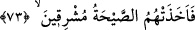
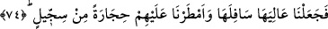

Allah’a âiddir. O, bu hususta hiçbir varlığa benzemez. Allah’ın yarattıklarından dilediği
üzerine yemîn etmesi, yemîn ettiği şeyin şerefine dikkat çekmek içindir. Çünkü O’nun
kendi fevkınde yemîn edebileceği hiç kimse yoktur. O da bazen kendisine bazen da
yarattığı varlıklara yemîn etmektedir. el-Fethu’l-karîb’de böyle denilmektedir.
“Ömrüme andolsun” gibi ifâdelerden maksadın sâdece sözün içeriğini pekiştirmek ve
ona değer katmak olması da mümkündür. Çünkü bu tür ifâdeler, diğer pekiştiricilerden
daha kuvvetlidir. Maksad şer’î mânâda yemîn etmek ve Allah Teâlâ’dan başkasını O’na
benzetmek değilse böyle bir yemîn, Allah üzerine yapılan bir yemînden daha sâlimdir.
Çünkü Allah adına yapılan yemînin mutlaka yerine getirilmesi gerekir. Bu şekilde
yemînin sûretini zikretmekte bir beis yoktur. Nitekim Hz. Peygamber (a.s.): “Babasına
andolsun ki, kurtuluşa erdi!”[79] buyurmuştur. el-Furûk’ta böyle geçmektedir.
73. “Güneş doğarken onları o korkunç ses yakaladı.”
“Güneş doğarken” güneşin doğma zamanına girerlerken “onları” yâni Lût kavmini
“o korkunç ses” Cebrâil (a.s.)’ın korkunç sesi “yakaladı.” Azâbın başlangıcı sabaha
girdikleri zaman olmuştur. Nitekim Allah: “Şunlar sabaha girerlerken, arkaları
kesilecektir!” (el-Hicr, 15/66) buyurmuştur. Azâbın tamamlanması ise güneşin doğma
zamanına denk gelmiştir. Çünkü Cebrâil (a.s.), şehirlerinin kurulu bulunduğu arâzîleri
yerlerinden kopararak gökyüzüne kaldırmış, sonra yeryüzüne bırakmış, sonra da
korkunç bir ses çıkarmıştır.
Böylece ‘sabaha girerlerken’ ifâdesiyle ‘güneşin doğma zamanına girerlerken’ ifâdesi,
birinin başlangıç ve diğerinin son olduğu söylenmek sûretiyle te’lîf edilmiş olmaktadır.
Bu mânâya göre 66. âyetteki: “arkaları kesilecektir!” ifâdesi, gerçek anlamındadır.
“Kesme” hali ise azâbın bitiş zamanı değil, başlandığı andır. Çünkü o zaman ifâde,
mecâz olmuş olur. “Arkaları kesilecektir” ifâdesi de ‘yakında arkaları kesilecek’
anlamına gelir.
74. Böylece ülkelerinin üstünü altına getirdik. Üzerlerine de balçıktan pişirilmiş
taşlar yağdırdık.
“Böylece ülkelerinin üstünü altına getirdik.” Şöyle ki onların ülkesini gökyüzüne
yakın bir yere kadar Cebrâil (a.s.)’ın kanadı üzerinde yükselttikten sonra başları üzerine
çevirip yere attık. Böylece onlarla birlikte tersyüz olmuş oldu. “Üstünü altına getirme”